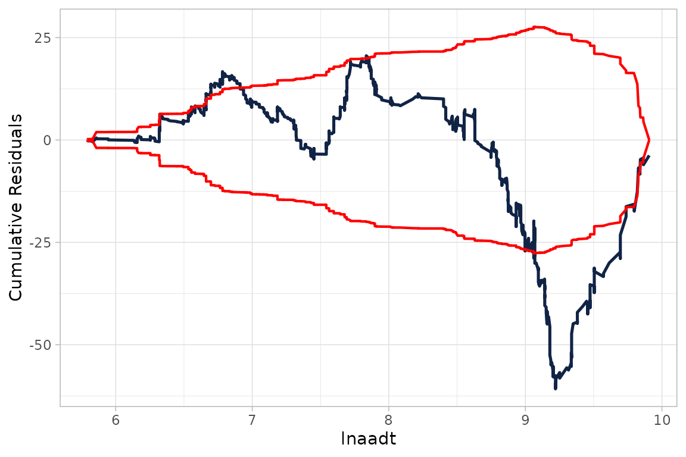

tidymodels is a family of
packages for building, resampling, tuning and comparing models with one
interface. flexCountReg plugs into it through parsnip:
count_reg() is a model specification, and every estimator
of the package is one of its engines. A negative binomial
regression, a latent-class model and a random-effects model can then
share the same preprocessing, the same resamples and the same
metrics.
This article covers fitting and predicting, recipes and workflows, offsets and other special columns, comparing and tuning models, weights, panel models, several outcomes, and getting back to the functions of flexCountReg.
library(parsnip)
library(recipes)
library(workflows)
library(workflowsets)
library(rsample)
library(tune)
library(yardstick)
library(flexCountReg)
data("washington_roads")
roads <- tibble::as_tibble(washington_roads)
roads$ID <- as.character(roads$ID)library(tidymodels) loads all of these except
flexCountReg at once. The data have three years of crashes on each road
segment, identified by ID.
A first model
Choose the distribution with family, the estimator with
set_engine(), and fit. Arguments of the estimator go into
set_engine().
nb_spec <- count_reg(family = "NB2") |>
set_engine("flexCountReg", method = "BFGS")
nb_fit <- fit(nb_spec, Total_crashes ~ lnaadt + lnlength + speed50,
data = roads)
tidy(nb_fit)
#> # A tibble: 5 × 6
#> term component estimate std.error statistic p.value
#> <chr> <chr> <dbl> <dbl> <dbl> <dbl>
#> 1 (Intercept) mean -8.77 0.439 -20.0 1.08e-88
#> 2 lnaadt mean 1.08 0.0518 20.9 3.81e-97
#> 3 lnlength mean 0.762 0.0694 11.0 4.74e-28
#> 4 speed50 mean -0.537 0.108 -4.98 6.32e- 7
#> 5 ln(alpha) distribution -1.04 0.249 -4.20 2.64e- 5
glance(nb_fit)
#> # A tibble: 1 × 10
#> model family logLik AIC BIC df nobs n_groups converged vcov_type
#> <chr> <chr> <dbl> <dbl> <dbl> <int> <int> <int> <lgl> <chr>
#> 1 countreg NB2 -1085. 2180. 2206. 5 1501 NA TRUE hessianPredictions are tibbles with one row per row of
new_data:
new_roads <- roads[1:4, ]
predict(nb_fit, new_roads)
#> # A tibble: 4 × 1
#> .pred
#> <dbl>
#> 1 0.780
#> 2 0.710
#> 3 1.04
#> 4 0.332
predict(nb_fit, new_roads, type = "conf_int")
#> # A tibble: 4 × 2
#> .pred_lower .pred_upper
#> <dbl> <dbl>
#> 1 0.643 0.943
#> 2 0.584 0.859
#> 3 0.847 1.27
#> 4 0.260 0.411
predict(nb_fit, new_roads, type = "pred_int", level = 0.9)
#> # A tibble: 4 × 2
#> .pred_lower .pred_upper
#> <dbl> <dbl>
#> 1 0 3
#> 2 0 3
#> 3 0 3
#> 4 0 2
augment(nb_fit, new_roads)[, c(".pred", ".resid", "Total_crashes")]
#> # A tibble: 4 × 3
#> .pred .resid Total_crashes
#> <dbl> <dbl> <int>
#> 1 0.780 -0.780 0
#> 2 0.710 1.29 2
#> 3 1.04 0.957 2
#> 4 0.332 -0.332 0conf_int is an interval for the expected count,
pred_int for a future count. All engines have them except
countreg_fe. Everything else that predict()
offers is available with type = "raw" and
opts, such as the probabilities of 0 to 3 crashes.
counts chooses the counts, so a range such as
5:8 works too; overflow = TRUE (and
underflow = TRUE) add the probabilities beyond the
range:
predict(nb_fit, new_roads, type = "raw",
opts = list(type = "prob", counts = 0:3, overflow = TRUE))
#> 0 1 2 3 >3
#> [1,] 0.5020 0.3072 0.12707 0.044160 0.019553
#> [2,] 0.5307 0.3014 0.11571 0.037318 0.014906
#> [3,] 0.4112 0.3138 0.16187 0.070148 0.042947
#> [4,] 0.7307 0.2171 0.04358 0.007352 0.001308The engines
show_engines("count_reg")
#> # A tibble: 12 × 2
#> engine mode
#> <chr> <chr>
#> 1 flexCountReg regression
#> 2 countreg_rp regression
#> 3 countreg_mix regression
#> 4 countreg_lc regression
#> 5 countreg_fe regression
#> 6 countreg_hier regression
#> 7 countreg_alloc regression
#> 8 countreg_mv regression
#> 9 renb regression
#> 10 repois regression
#> 11 poislind_re regression
#> 12 negmultinom regression| Engine | Estimator | Typical engine arguments |
|---|---|---|
flexCountReg |
countreg() |
dis_param_formula_1,
zero_formula, underreport_formula,
offset
|
countreg_rp |
countreg_rp() |
rpar_formula, rpardists,
ndraws, group_var
|
countreg_mix |
countreg_mix() |
components,
mixing_formula
|
countreg_lc |
countreg_lc() |
classes, membership_formula,
group_var
|
countreg_fe |
countreg_fe() |
fixef |
countreg_hier |
countreg_hier() |
re_dist, fit_engine
|
countreg_alloc |
countreg_alloc() |
alloc_formula, link
|
countreg_mv |
countreg_mv() |
copula, rpar_formula
|
renb, repois,
poislind_re
|
the function of that name | group_var |
negmultinom |
negmultinom() |
group_var |
Two engine arguments belong to the tidymodels interface:
-
predict_argsis a list of arguments for the model’spredict()method, used for numeric predictions, for examplepredict_args = list(method = "Exact")for random parameters. -
fit_engineis the estimators’ ownengineargument (the numerical method), becauseset_engine()already has an argument of that name.
Recipes and workflows
A workflow bundles preprocessing with the model. Here a recipe centers and scales the numeric predictors and makes indicators of a factor; the statistics are estimated on the training data only.
roads$year <- factor(roads$Year)
set.seed(2026)
split <- group_initial_split(roads, group = ID, prop = 0.75)
train <- training(split)
test <- testing(split)
rec <- recipe(Total_crashes ~ lnaadt + lnlength + speed50 + year,
data = train) |>
step_normalize(lnaadt, lnlength) |>
step_dummy(year)
nb_wf <- workflow() |>
add_recipe(rec) |>
add_model(nb_spec)
nb_wf_fit <- fit(nb_wf, train)
tidy(nb_wf_fit)
#> # A tibble: 7 × 6
#> term component estimate std.error statistic p.value
#> <chr> <chr> <dbl> <dbl> <dbl> <dbl>
#> 1 (Intercept) mean -1.12 0.104 -10.8 5.33e-27
#> 2 lnaadt mean 1.11 0.0605 18.3 1.30e-74
#> 3 lnlength mean 0.532 0.0536 9.94 2.82e-23
#> 4 speed50 mean -0.556 0.125 -4.45 8.41e- 6
#> 5 year_X2017 mean -0.182 0.124 -1.47 1.42e- 1
#> 6 year_X2018 mean -0.155 0.122 -1.27 2.04e- 1
#> 7 ln(alpha) distribution -1.05 0.281 -3.75 1.79e- 4
augment(nb_wf_fit, test) |>
rmse(truth = Total_crashes, estimate = .pred)
#> # A tibble: 1 × 3
#> .metric .estimator .estimate
#> <chr> <chr> <dbl>
#> 1 rmse standard 0.734The split keeps all years of a segment on one side
(group_initial_split()), so the test segments are new to
the model. A random split of rows would put years of one segment on both
sides.
flexCountReg’s own rmse() and mae() take
two vectors; given a data frame they call the yardstick metric, so
tidymodels code works whichever package is loaded last. (With yardstick
loaded last, use flexCountReg::rmse() or
yardstick::rmse_vec() for two vectors.)
Offsets and other columns that are not predictors
With add_formula() or a recipe, all predictors enter the
mean model. Count models often need columns with another purpose: an
exposure, a grouping variable, or a covariate of the dispersion only. A
workflow passes the model only its predictors and outcomes, so these
columns must be among the predictors (a recipe’s other roles do
not reach the model). There are two ways to say what they are.
Give the model formula in add_model().
The preprocessor says which columns are available and the formula says
how they are used. All the formula features of the package work here:
offset(), smooths s(x), tv()
terms and random effects.
wf_offset <- workflow() |>
add_variables(outcomes = Total_crashes,
predictors = c(lnaadt, lnlength, speed50)) |>
add_model(count_reg() |>
set_engine("flexCountReg", method = "BFGS",
dis_param_formula_1 = ~ lnlength),
formula = Total_crashes ~ lnaadt + speed50 + offset(lnlength))
tidy(fit(wf_offset, train))[, 1:4]
#> # A tibble: 5 × 4
#> term component estimate std.error
#> <chr> <chr> <dbl> <dbl>
#> 1 (Intercept) mean -8.68 0.510
#> 2 lnaadt mean 1.10 0.0591
#> 3 speed50 mean -0.565 0.127
#> 4 ln(alpha):(Intercept) distribution -1.25 0.470
#> 5 ln(alpha):lnlength distribution -0.372 0.390A recipe works too, in place of add_variables():
workflow() |>
add_recipe(rec) |>
add_model(nb_spec, formula = Total_crashes ~ s(lnaadt) + speed50)Name the columns in engine arguments. Columns named
in offset, group_var, panel_id,
cluster, fixef, cre_group or
time are left out of the mean model when no model formula
is given. So are the variables of rpar_formula with the
countreg_rp engine, which are random instead of fixed.
wf_offset2 <- workflow() |>
add_formula(Total_crashes ~ lnaadt + lnlength) |>
add_model(count_reg() |> set_engine("flexCountReg", method = "BFGS",
offset = "lnlength"))
tidy(fit(wf_offset2, train))[, 1:4]
#> # A tibble: 3 × 4
#> term component estimate std.error
#> <chr> <chr> <dbl> <dbl>
#> 1 (Intercept) mean -9.24 0.507
#> 2 lnaadt mean 1.15 0.0590
#> 3 ln(alpha) distribution -0.840 0.252Variables used only in dis_param_formula_1,
zero_formula and similar formulas are not left
out, because they often belong in both places; use a model formula for
those. Do not normalize an offset or make indicators of a grouping
column in a recipe.
Comparing models on resamples
Cross-validate with whole segments, and compare several engines in a
workflow set. The panel engines receive the segment as
group_var.
set.seed(2026)
folds <- group_vfold_cv(train, group = ID, v = 3)
specs <- list(
poisson = count_reg(family = "POISSON") |>
set_engine("flexCountReg", method = "BFGS"),
nb2 = nb_spec,
two_class = count_reg(family = "POISSON") |>
set_engine("countreg_lc", classes = 2, n_starts = 3, seed = 1,
group_var = "ID"),
re_poisson = count_reg() |>
set_engine("repois", group_var = "ID", method = "BFGS"))
base <- workflow_set(
preproc = list(base = Total_crashes ~ lnaadt + lnlength + speed50 + ID),
models = specs[c("two_class", "re_poisson")])
plain <- workflow_set(
preproc = list(base = Total_crashes ~ lnaadt + lnlength + speed50),
models = specs[c("poisson", "nb2")])
res <- dplyr::bind_rows(base, plain) |>
workflow_map("fit_resamples", resamples = folds,
metrics = metric_set(rmse, mae))
rank_results(res, rank_metric = "rmse")[, c("wflow_id", ".metric", "mean",
"std_err")]
#> # A tibble: 8 × 4
#> wflow_id .metric mean std_err
#> <chr> <chr> <dbl> <dbl>
#> 1 base_two_class mae 0.498 0.0294
#> 2 base_two_class rmse 0.843 0.0946
#> 3 base_re_poisson mae 0.498 0.0261
#> 4 base_re_poisson rmse 0.850 0.0932
#> 5 base_nb2 mae 0.497 0.0261
#> 6 base_nb2 rmse 0.851 0.0934
#> 7 base_poisson mae 0.497 0.0253
#> 8 base_poisson rmse 0.851 0.0919RMSE and MAE only look at the expected count, and models with the
same mean structure are hard to tell apart by them. To compare the
distributions, score the predicted probabilities.
fit_resamples_counts() resamples a workflow or
specification like fit_resamples() and can add the mean log
probability of the held-out counts (larger is better). See
vignette("predictive-validation", package = "flexCountReg")
for scores and calibration.
f <- Total_crashes ~ lnaadt + lnlength + speed50
scores <- lapply(specs, fit_resamples_counts, resamples = folds,
formula = f, log_score = TRUE)
do.call(rbind, Map(function(s, nm) {
cbind(model = nm, s[s$.metric == "log_score", c("mean", "std_err")])
}, scores, names(scores)))
#> model mean std_err
#> poisson poisson -0.7709 0.04543
#> nb2 nb2 -0.7518 0.04256
#> two_class two_class -0.7606 0.05090
#> re_poisson re_poisson -0.7510 0.04285Tuning
The distribution is a tuning parameter:
tune_wf <- workflow() |>
add_formula(Total_crashes ~ lnaadt + lnlength + speed50) |>
add_model(count_reg(family = tune()) |>
set_engine("flexCountReg", method = "BFGS"))
tuned <- tune_grid(tune_wf, resamples = folds,
grid = data.frame(family = c("POISSON", "NB1", "NB2",
"PL")),
metrics = metric_set(rmse, mae))
show_best(tuned, metric = "rmse")
#> # A tibble: 4 × 7
#> family .metric .estimator mean n std_err .config
#> <chr> <chr> <chr> <dbl> <int> <dbl> <chr>
#> 1 NB1 rmse standard 0.850 3 0.0931 pre0_mod1_post0
#> 2 PL rmse standard 0.850 3 0.0937 pre0_mod3_post0
#> 3 NB2 rmse standard 0.851 3 0.0934 pre0_mod2_post0
#> 4 POISSON rmse standard 0.851 3 0.0919 pre0_mod4_post0
final_wf <- finalize_workflow(tune_wf, select_best(tuned, metric = "rmse"))
last_fit(final_wf, split, metrics = metric_set(rmse, mae)) |>
collect_metrics()
#> # A tibble: 2 × 4
#> .metric .estimator .estimate .config
#> <chr> <chr> <dbl> <chr>
#> 1 rmse standard 0.726 pre0_mod0_post0
#> 2 mae standard 0.449 pre0_mod0_post0Some engine arguments have tuning parameters too (see
?count_family): components and
classes, zero_type, correlated
and re_dist. Any other argument can be tuned with an
explicit grid.
lc_wf <- workflow() |>
add_formula(Total_crashes ~ lnaadt + lnlength) |>
add_model(count_reg(family = "POISSON") |>
set_engine("countreg_mix", components = tune(), n_starts = 2,
seed = 1))
hardhat::extract_parameter_set_dials(lc_wf)
tune_grid(lc_wf, folds, grid = data.frame(components = 2:3),
metrics = metric_set(rmse)) |>
collect_metrics()
#> # A tibble: 2 × 7
#> components .metric .estimator mean n std_err .config
#> <int> <chr> <chr> <dbl> <int> <dbl> <chr>
#> 1 2 rmse standard 0.839 3 0.0858 pre0_mod1_post0
#> 2 3 rmse standard 0.843 3 0.0895 pre0_mod2_post0Tuning selects for out-of-sample accuracy; the standard errors of the
selected model do not account for the selection. Some families have no
dispersion parameter, so a grid that includes "POISSON"
fails for those rows when dis_param_formula_1 is set.
Use a parallel backend for slow models
(future::plan("multisession") before
tune_grid()); the workers load flexCountReg themselves.
Case weights
Case weights become the estimator’s weights, by default
frequency weights. parsnip passes the engine only the values of the
weights, so for importance or sampling weights say so with
weight_type = "sampling" (flexCountReg and
countreg_rp engines), which gives robust standard
errors.
train_w <- train
train_w$w <- hardhat::frequency_weights(rep(1:2, length.out = nrow(train)))
wf_w <- workflow() |>
add_formula(Total_crashes ~ lnaadt + lnlength) |>
add_case_weights(w) |>
add_model(nb_spec)
tidy(fit(wf_w, train_w))[, 1:4]
#> # A tibble: 4 × 4
#> term component estimate std.error
#> <chr> <chr> <dbl> <dbl>
#> 1 (Intercept) mean -9.27 0.416
#> 2 lnaadt mean 1.12 0.0493
#> 3 lnlength mean 0.765 0.0646
#> 4 ln(alpha) distribution -1.08 0.245Panel and hierarchical models
Random effects of countreg_hier() are written in the
model formula:
hier_wf <- workflow() |>
add_variables(outcomes = Total_crashes,
predictors = c(lnaadt, lnlength, ID)) |>
add_model(count_reg(family = "NB2") |>
set_engine("countreg_hier",
predict_args = list(marginal = TRUE)),
formula = Total_crashes ~ lnaadt + lnlength + (1 | ID))
hier_fit <- fit(hier_wf, train)
predict(hier_fit, test[1:3, ])
#> # A tibble: 3 × 1
#> .pred
#> <dbl>
#> 1 1.27
#> 2 1.03
#> 3 0.476The test segments are new groups. With marginal = TRUE
their predictions average over the distribution of the random effect;
without it they are for a segment whose effect is zero. The choice
matters for rmse(), so set it in predict_args.
Likewise, countreg_fe() has no effect for a new group and
predicts NA unless
predict_args = list(newgroup = "mean_fe").
A random-parameters model:
rp_spec <- count_reg(family = "NB2") |>
set_engine("countreg_rp", rpar_formula = ~ -1 + lnlength,
ndraws = 100, predict_args = list(method = "Exact"))
rp_wf <- workflow() |>
add_formula(Total_crashes ~ lnaadt + speed50 + lnlength) |>
add_model(rp_spec)
rp_fit <- fit(rp_wf, train)
tidy(rp_fit)[, 1:4]
#> # A tibble: 6 × 4
#> term component estimate std.error
#> <chr> <chr> <dbl> <dbl>
#> 1 (Intercept) mean -8.61 0.502
#> 2 lnaadt mean 1.07 0.0589
#> 3 speed50 mean -0.556 0.125
#> 4 lnlength:Mean random_mean 0.822 0.101
#> 5 lnlength:St.Dev random_scale 0.177 0.160
#> 6 ln(alpha) distribution -1.16 0.389
predict(rp_fit, test[1:3, ])
#> # A tibble: 3 × 1
#> .pred
#> <dbl>
#> 1 0.800
#> 2 0.655
#> 3 0.312Several outcomes
countreg_mv() and countreg_alloc() model
several counts. Declare all of them as outcomes and give the model
formula. There is one prediction column per outcome.
set.seed(1)
sev <- train
sev$injury <- rbinom(nrow(sev), sev$Total_crashes, 0.35)
sev$pdo <- sev$Total_crashes - sev$injury
mv_wf <- workflow() |>
add_variables(outcomes = c(injury, pdo),
predictors = c(lnaadt, lnlength)) |>
add_model(count_reg(family = "NB2") |>
set_engine("countreg_mv", copula = "frank"),
formula = cbind(injury, pdo) ~ lnaadt + lnlength)
mv_fit <- fit(mv_wf, sev)
predict(mv_fit, sev[1:3, ])
#> # A tibble: 3 × 2
#> .pred_injury .pred_pdo
#> <dbl> <dbl>
#> 1 0.403 0.805
#> 2 0.366 0.730
#> 3 0.542 1.09(The severities here are simulated.) Interval predictions have a pair of columns per outcome:
predict(mv_fit, sev[1:3, ], type = "pred_int", level = 0.9)
#> # A tibble: 3 × 4
#> .pred_lower_injury .pred_upper_injury .pred_lower_pdo .pred_upper_pdo
#> <dbl> <dbl> <dbl> <dbl>
#> 1 0 2 0 3
#> 2 0 2 0 3
#> 3 0 2 0 4The resampling functions of tune compute metrics for a single
outcome. fit_resamples_counts() evaluates all of them:
mv_folds <- group_vfold_cv(sev, group = ID, v = 3)
fit_resamples_counts(mv_wf, mv_folds, log_score = TRUE)
#> # A tibble: 6 × 5
#> outcome .metric mean n std_err
#> <chr> <chr> <dbl> <int> <dbl>
#> 1 injury rmse 0.411 3 0.0122
#> 2 injury mae 0.218 3 0.00856
#> 3 injury log_score -0.374 3 0.0411
#> 4 pdo rmse 0.646 3 0.0303
#> 5 pdo mae 0.380 3 0.00939
#> 6 pdo log_score -0.614 3 0.00978Back to flexCountReg
extract_fit_engine() returns the flexCountReg model, for
everything that tidymodels has no interface for: marginal effects, CURE
plots, rootograms, robust covariances, model tests.
m <- extract_fit_engine(fit(wf_offset, train))
margEffTable(m)
#> Marginal Effects / Elasticities
#> Method: delta
#>
#> term variable_type effect_metric estimate std_error t_value
#> lnaadt continuous Average marginal effect 0.531 0.044 12.08
#> speed50 indicator Pseudo-elasticity (%) -43.167 7.195 -6.00
#> p_value sig lower_ci upper_ci n_obs successful_bootstraps
#> 0 *** 0.445 0.617 1125 NA
#> 0 *** -57.268 -29.065 1125 NA
cureplot(m, indvar = "lnaadt")
Keep in mind:
- Without a model formula the outcome is called
..yin the extracted model; with one it keeps its name. - The extracted model sees the preprocessed columns. Marginal
effects after
step_normalize()are per standard deviation. - A workflow removes the outcome from
new_data. Predictions that use it, such as Empirical Bayes predictions (predict(m, newdata, method = "Individual")) or posterior class probabilities, need the extracted model. -
keep_data = FALSE(an engine argument of most estimators) makes saved models smaller, at the cost of the functions that need the training data. - Load flexCountReg before using a saved workflow: that registers the engines.